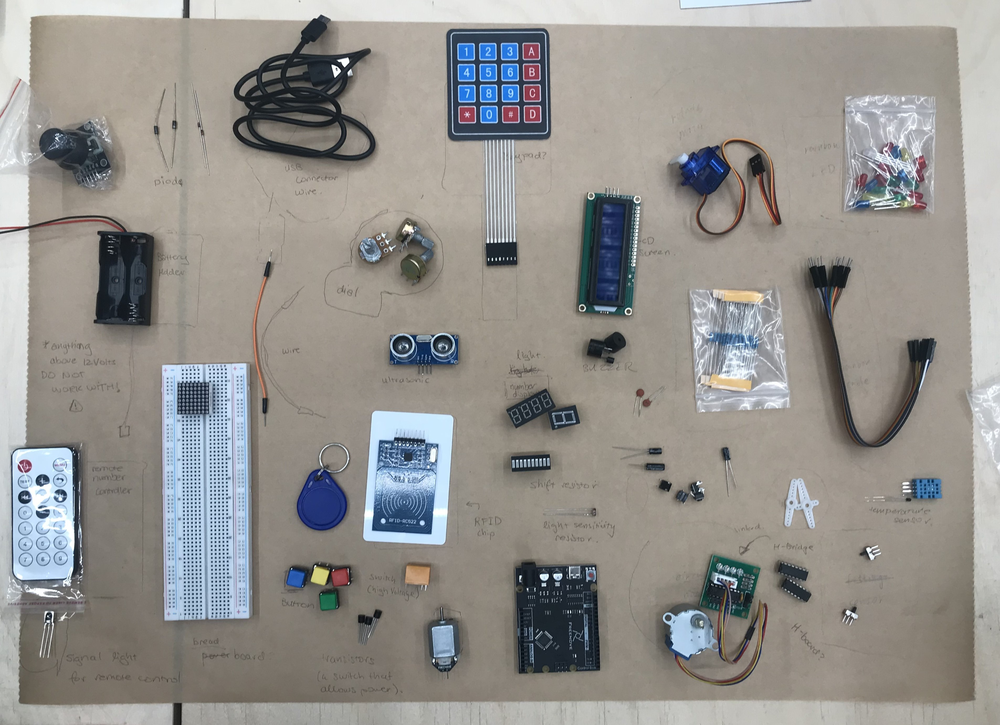
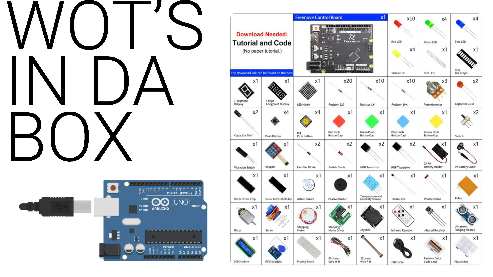
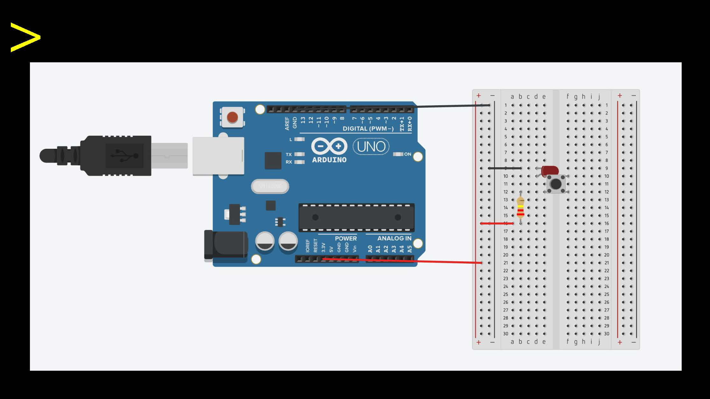
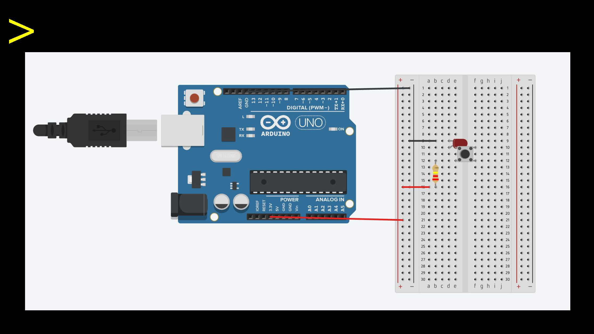
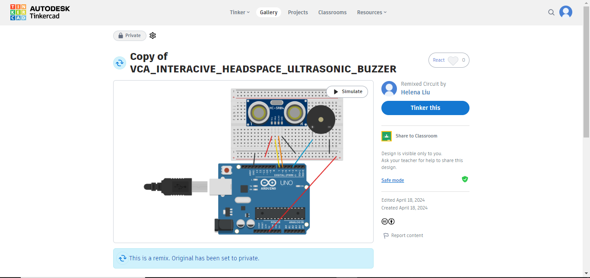

Introductions to Arduino: an open-source electronics platform based on easy-to-use hardware and software. Arduino boards are able to read inputs - light on a sensor, a finger on a button, or a Twitter message - and turn it into an output - activating a motor, turning on an LED, publishing something online. To begin, we opened up the Arduino kits provided by the interactive media course at the Telstra Creator Space. In pairs, we then started to lay out all the components and take a guess at labelling each part.
 
After learning about all the components, we began to conduct our first Arduino set-up. The function of the first project was to make an LED blink on the command of a button. This part did not require any code to be written and uploaded, due to its simplistic nature. We activated the system through using a basic battery.
 

Following the creation of TinkerCAD accounts, we were able to simulate the Arduino board and its components on the computer, and begin to execute more complicated procedures. We then moved on to the second project, which involved using the motion sensors to allow speakers to beep when the sensor was activated. We worked in pairs to insert wires into the breadboard, and then uploaded the corresponding pre-written code to the Arduino software. We had some laptop compatibilty issues in the beginning, but soon resolved it.

Physical computing:
List of Website's Final Features: